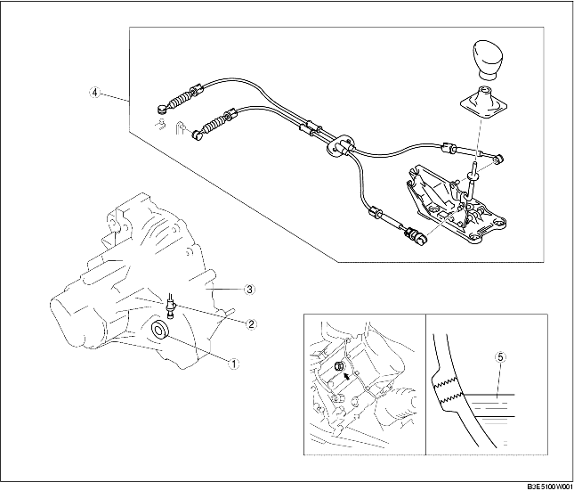

.
|
1
|
Joint d'huile (différentiel)
(voir la section REMPLACEMENT DE JOINT D'HUILE (DIFFERENTIEL) [G35M-R].)
|
|
2
|
Contacteur de point mort
(voir la section DÉPOSE/REPOSE DE CONTACTEUR DE POINT MORT [G35M-R].)
(voir la section INSPECTION DE CONTACTEUR DE POINT MORT [LF].)
|
|
3
|
Boîte-pont manuelle
(voir la section DEPOSE/REPOSE DE BOITE-PONT MANUELLE [G35M-R].)
|
|
4
|
Mécanisme de changement de vitesse
(voir la section DEPOSE/REPOSE DE MECANISME DE CHANGEMENT DE VITESSE.)
|
|
5
|
Huile de boîte-pont
(voir la section INSPECTION D'HUILE DE BOITE-PONT [G35M-R].)
(voir la section REMPLACEMENT D'HUILE DE BOITE-PONT [G35M-R].)
|